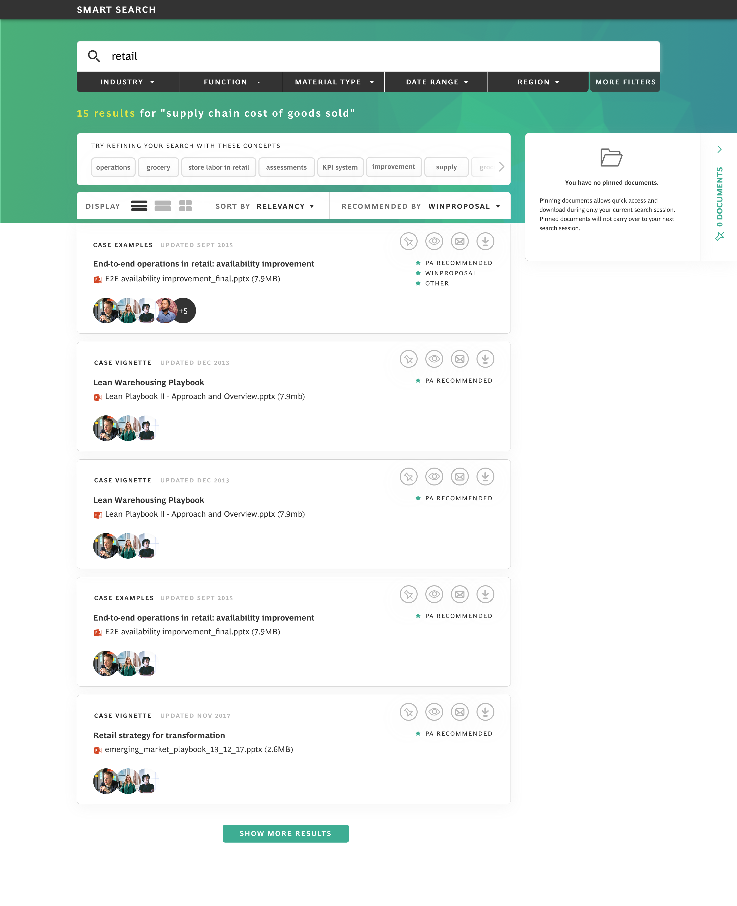
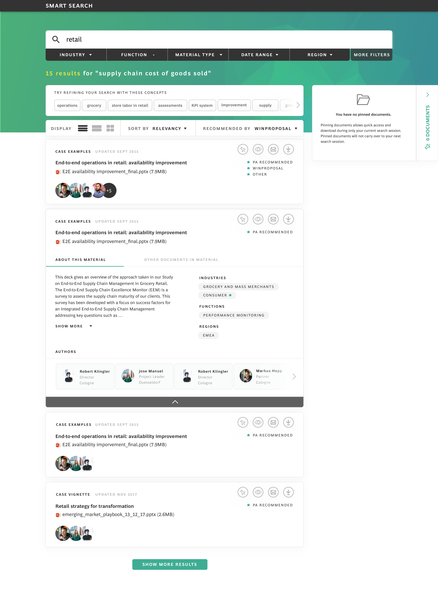

I redesigned the global internal search tool for a consulting firm. I worked across the entire design process from UX research and wireframing concepts to design language creation, high fidelity mock-ups, and front-end engineering hand-off documentation. I balanced user needs with stakeholder demands as we ready the product for MVP launch.
The biggest challenge of this project was balancing a modern design with an incredibly complex information architecture. I conducted user interviews on a regular basis to get a feel for how consultants are currently using the tool, to ensure that in modernizing the design, there would be little to no functionality lost.
Much of my work at Alloy is confidential, so please reach out if you'd like to see more for hiring purposes.
